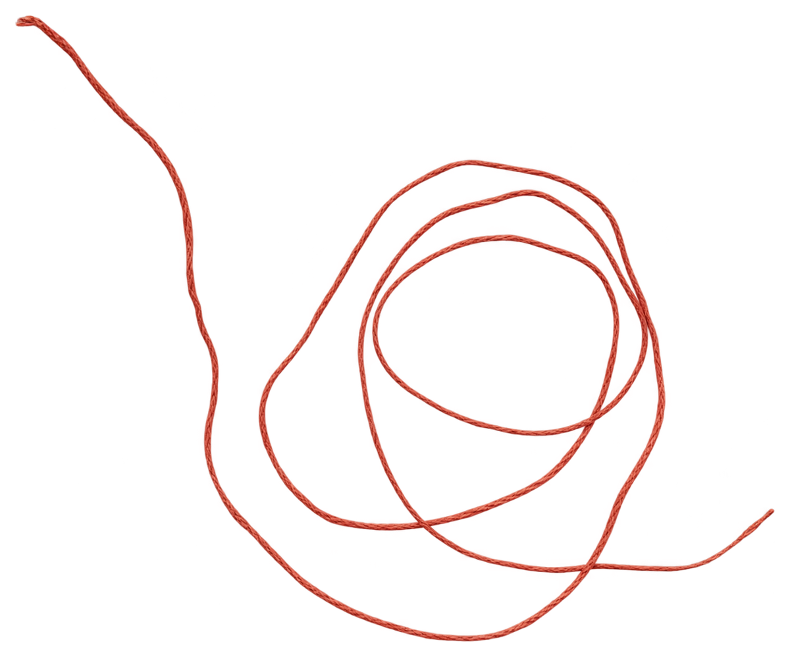

nudo — laboratorio de creación editorial
laboratorio de creación editorial
Conectamos edición, diseño, materialidad y narración en distintos procesos creativos. Creamos publicaciones, objetos editoriales, identidades visuales, ilustraciones y otras piezas gráficas, y ofrecemos asesorías y talleres.
deslizasobre nudo
Nudo es un espacio para explorar las posibilidades de la creación editorial. Nos interesa lo que ocurre entre una idea y su forma; las palabras, las imágenes, los materiales, las decisiones gráficas y las maneras de narrar.
Entendemos la edición como un proceso que va más allá de la publicación. Una forma de pensar, conectar y construir a partir de distintos lenguajes, en la que cada decisión participa en la manera de comunicar y experimentar una idea.
Por eso, trabajamos desde la exploración y el diálogo entre disciplinas, acompañando proyectos que encuentran en lo editorial una manera de desarrollarse, expresarse y relacionarse con el mundo.
proyectos
Publicaciones, objetos, ilustraciones y otras formas de narrar.
Ocupar espacio
El mundo de Ñams
Etno DJ
Carey
El mundo de las setas
servicios
Lo que hacemos.
-
01
Edición
libros textos publicaciones corrección de estilo edición de contenidos desarrollo editorial
-
02
Diseño
libros revistas publicaciones físicas y digitales identidad gráfica piezas para redes sociales ilustración
-
03
Asesorías
autores estudiantes editoriales organizaciones proyectos culturales procesos editoriales
-
04
Experiencias
talleres laboratorios creativos prácticas de edición diseño editorial exploración de materiales encuentros
¿cómo trabajamos?
Cada proyecto tiene sus propias preguntas, tiempos y necesidades. Por eso, nuestro punto de partida es siempre una conversación.
1
Nos conocemos
Nos cuentas qué tienes en mente, en qué etapa está tu proyecto y qué necesitas.
2
Exploramos posibilidades
Revisamos tus necesidades y definimos el alcance del trabajo, los tiempos y la propuesta más adecuada.
3
Le damos forma
Trabajamos de manera conjunta en el desarrollo del proyecto, desde las primeras ideas hasta los resultados acordados.
nosotras
Las manos detrás del nudo.

foto pendiente
Texto pendiente: una breve presentación de quienes forman nudo, su formación y cómo llegaron a la creación editorial.

contacto
¿hacemos algo junt*s?
¿Tienes una idea en mente? Nos encantaría conocerla. Escríbenos o llámanos.